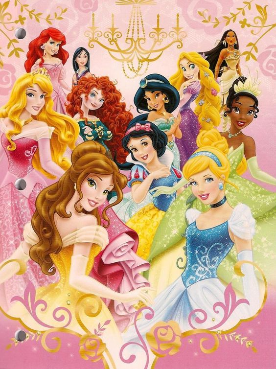

Princesas

Disney Princess (traducido como Princesas Disney), o también llamada Princess Line,1 es una franquicia de The Walt Disney Company formada por heroínas de diversas películas, comúnmente princesas o que llegan a convertirse en princesas en el desarrollo de sus respectivas películas.
La franquicia incluye a protagonistas de películas animadas de Walt Disney Pictures, con once miembros del canon de Walt Disney Animation Studios, y un miembro procedente de una película de Pixar Animation Studios.
Los trece personajes que forman parte de esta franquicia son: Blancanieves, Cenicienta, Aurora, Ariel, Bella, Jasmín, Pocahontas, Mulán, Tiana, Rapunzel, Mérida, y Moana / Vaiana.2
La franquicia ha lanzado muñecas, libros, videos para cantar, ropa, productos de belleza, decoración para el hogar, juguetes y una variedad de otros productos.